Primera propuesta
En esta visualización quise mostrar el porcentaje de estudiantes que aprueban su proyecto de título con cada profesor guía. Utilicé un gráfico de burbujas para representar de forma visual y comparativa qué profesores tienden a aprobar más o menos. Esta información puede ser útil para conocer el nivel de exigencia o flexibilidad de cada docente.
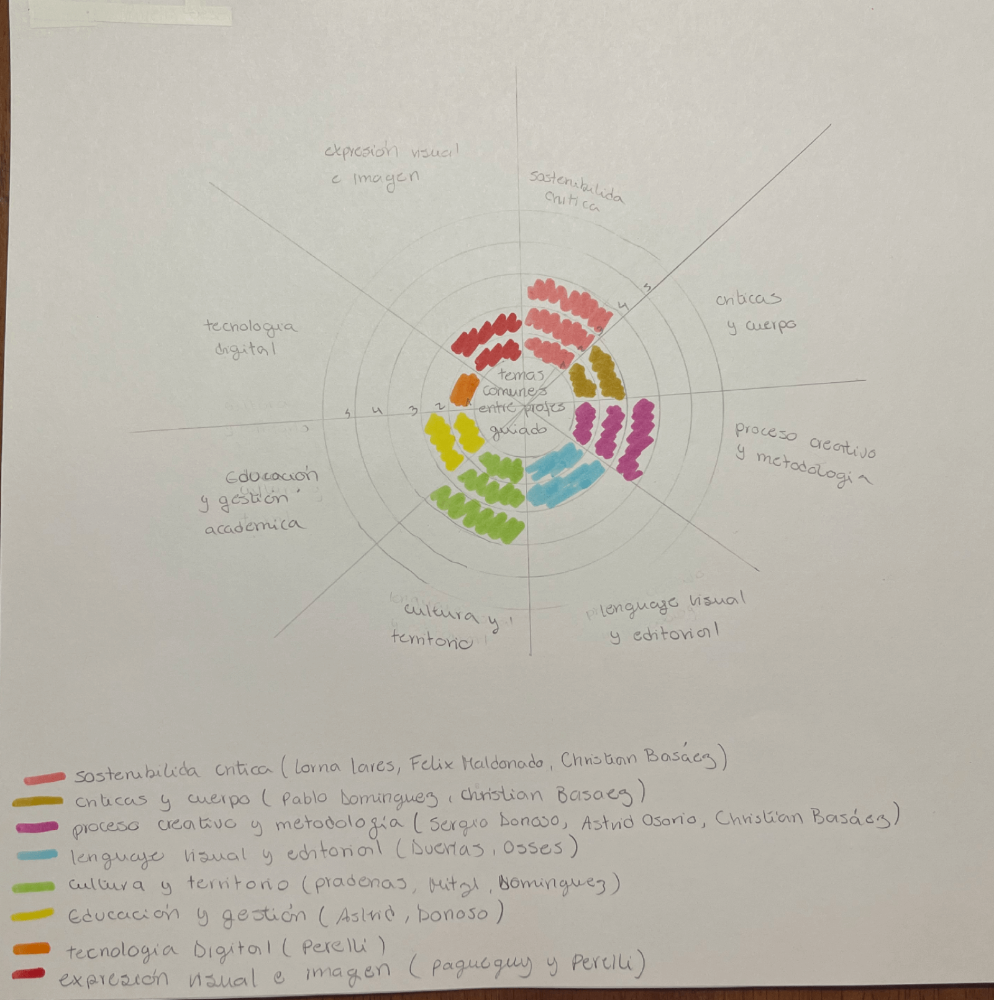
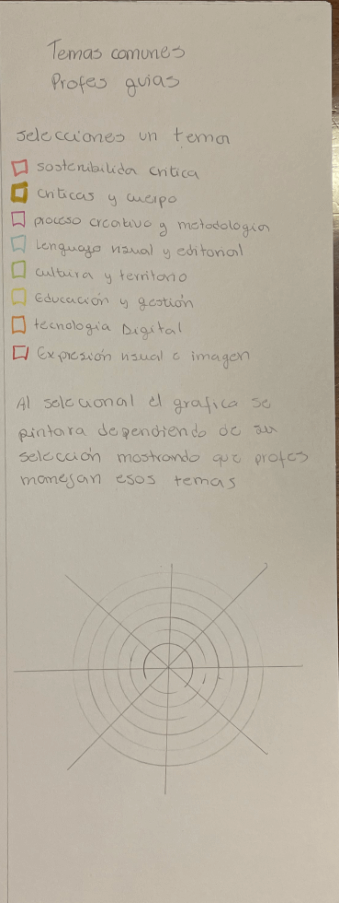
Segunda propuesta
Aquí busqué representar las diferencias en las notas finales obtenidas por los estudiantes según su perfil: diseñador general, gráfico o industrial. Para eso utilicé un gráfico de barras apiladas, con datos extraídos del link Clase 07. Esta visualización me permitió observar si hay alguna tendencia o diferencia en las evaluaciones dependiendo del tipo de diseñador.
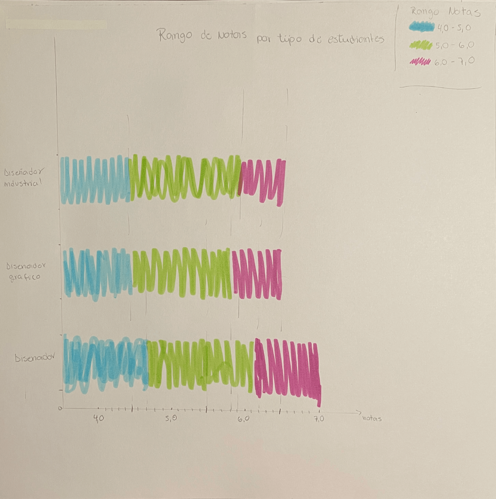
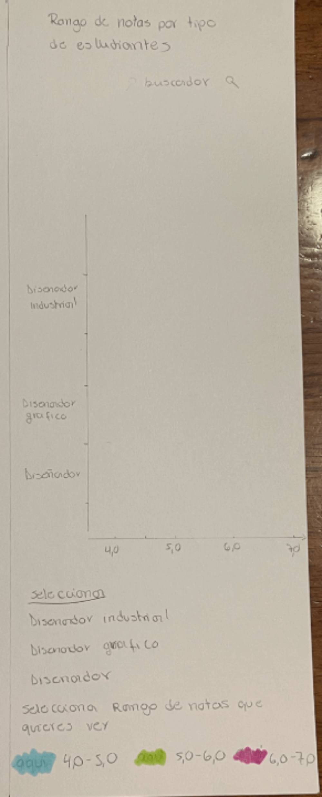
Tercera propuesta
Con esta visualización intenté mapear qué profesores trabajan qué temas, agrupándolos según su perfil profesional: Diseño Gráfico, Diseño Industrial o ambos. Organicé los profesores dentro de tres círculos grandes y los conecté con líneas hacia los temas que trabajan. El color de cada línea indica el tipo de diseñador. Esta red me ayudó a ver de manera clara las conexiones entre profes y temáticas, y a detectar afinidades.
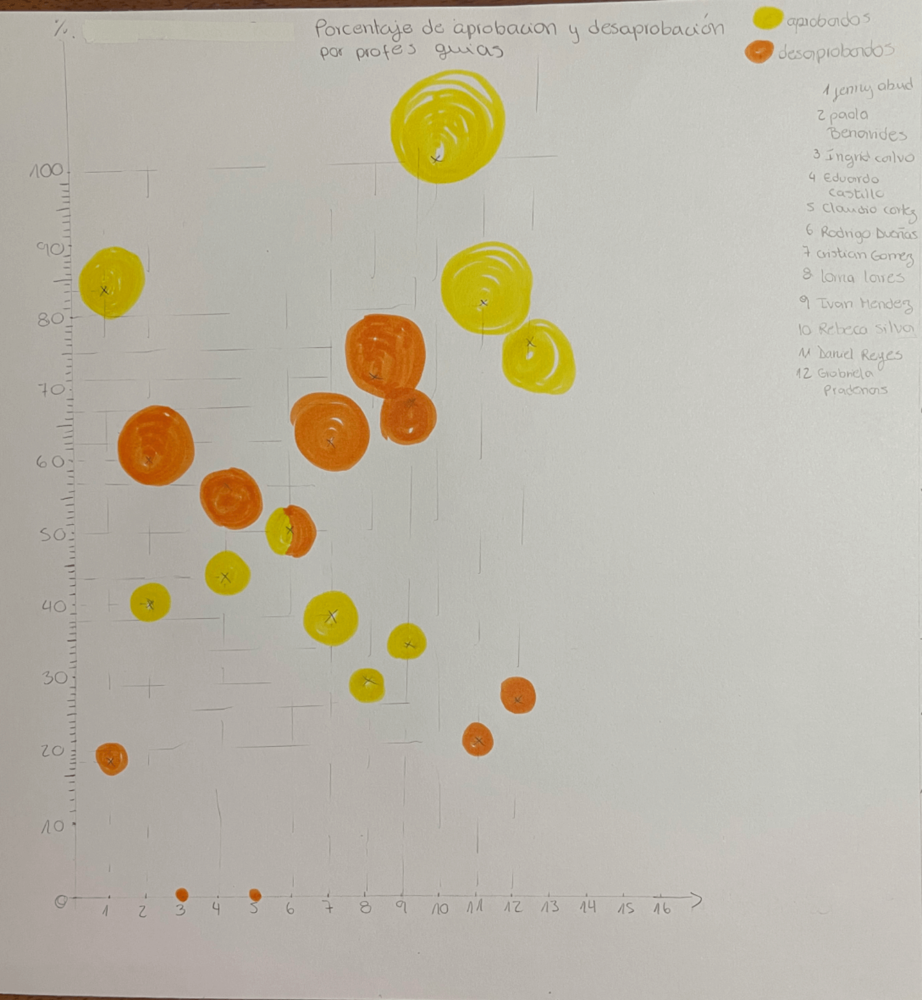
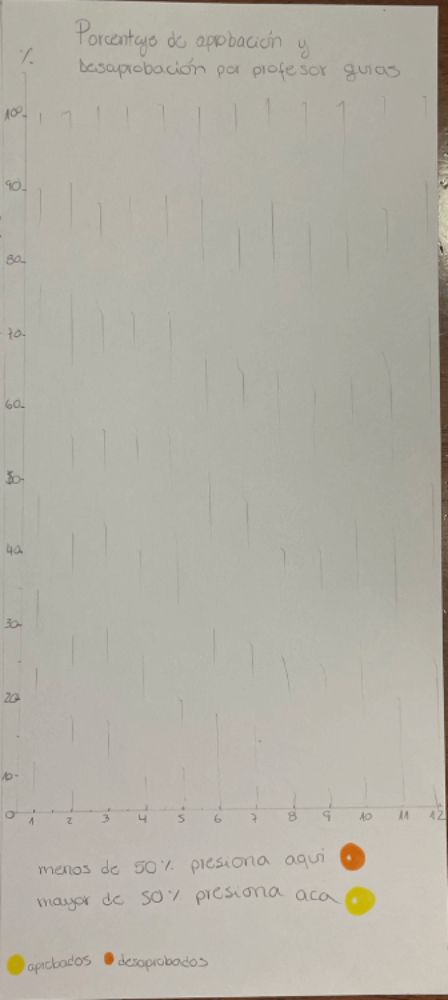
Cuarta propuesta
Quise representar las notas obtenidas en cada memoria de título, vinculándolas a los profesores que las guiaron. Usé un gráfico de puntos, asignando un número a cada profesor para facilitar el dibujo y no usar tantos colores. Esta visualización me permitió comparar cómo evalúa cada docente de forma más detallada y visualizar si tienden a poner notas altas o más bajas.
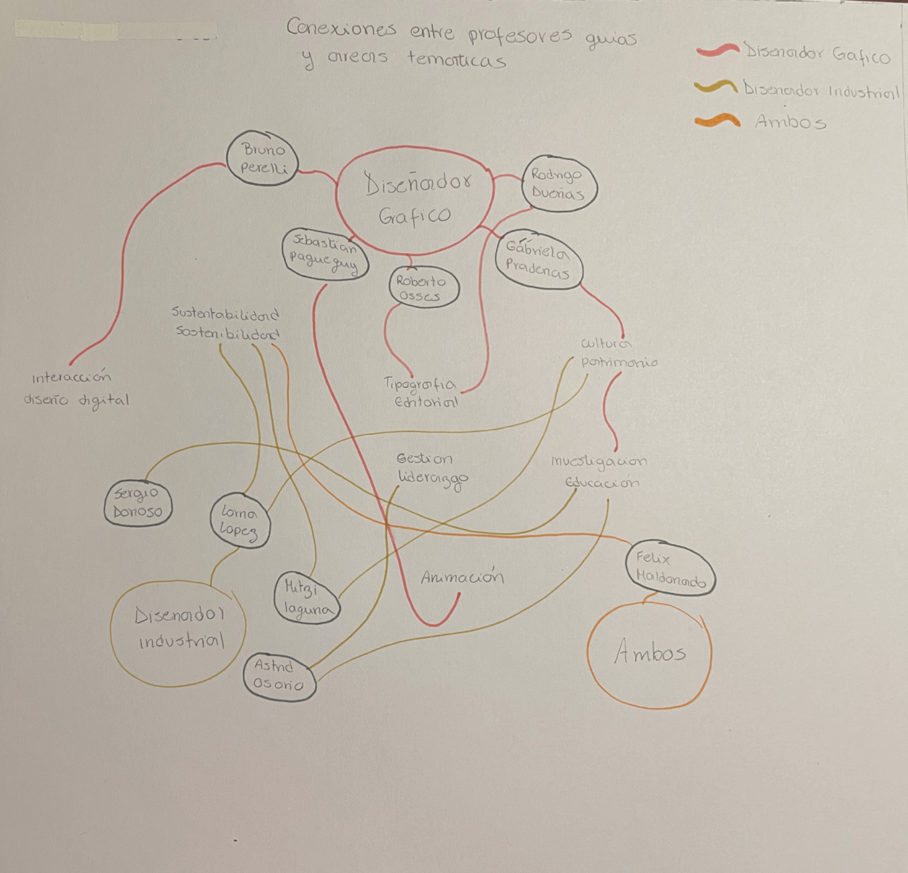
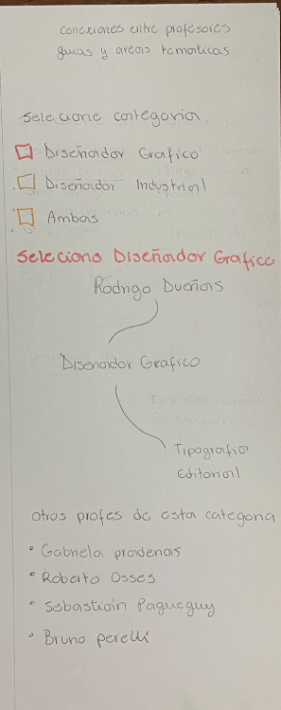
Quinta propuesta
Esta visualización fue pensada para ver cuáles son los temas más comunes entre los profesores guía. Usé un gráfico radial tipo flor, con ocho pétalos que representan distintas áreas temáticas como sostenibilidad crítica, procesos, cultura o tecnología. El largo de cada pétalo indica cuántos profes trabajan ese enfoque. La acompañé con una tabla que especifica qué profes están en cada tema. Esto me ayudó a entender qué líneas temáticas predominan en la escuela.
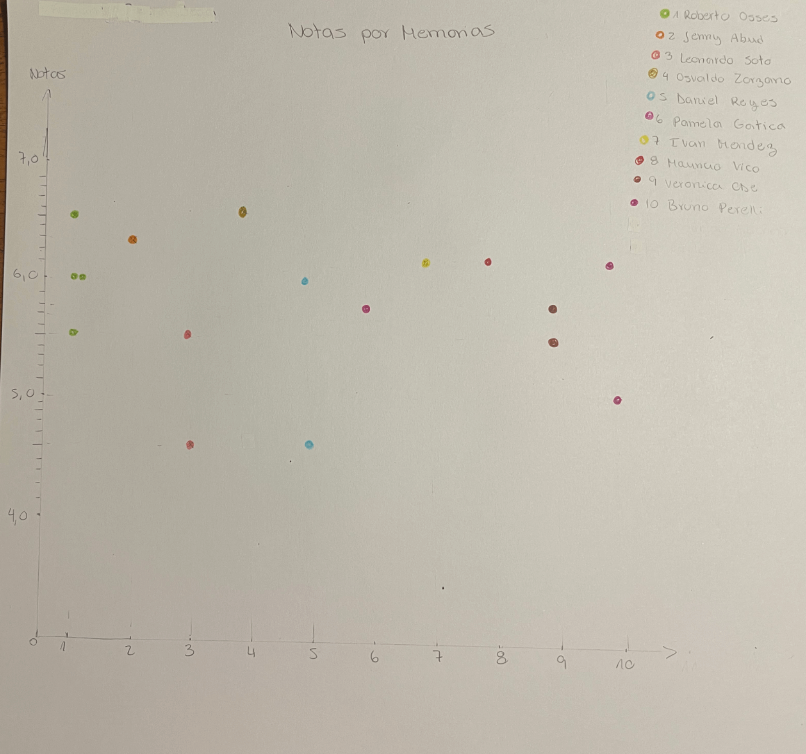
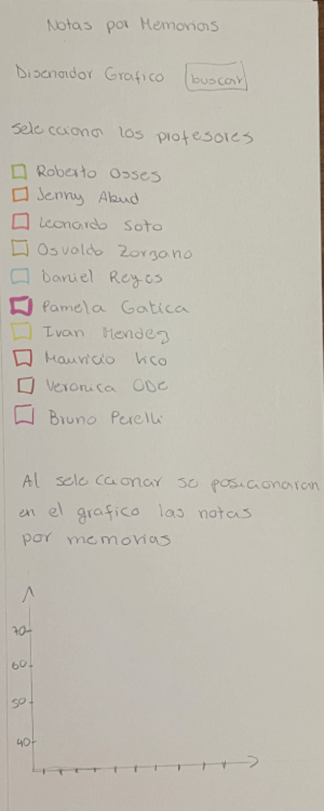
Sexta propuesta
En esta última visualización quise mostrar qué profesores han tenido más experiencia reciente como guía de título. A partir de la muestra de memorias del link Clase 07, hice un gráfico de barras que indica cuántas veces cada profe ha sido guía. Consideré adaptar esta visualización a formato celular, usando barras horizontales o una lista visual para que se lea fácilmente en pantallas pequeñas.
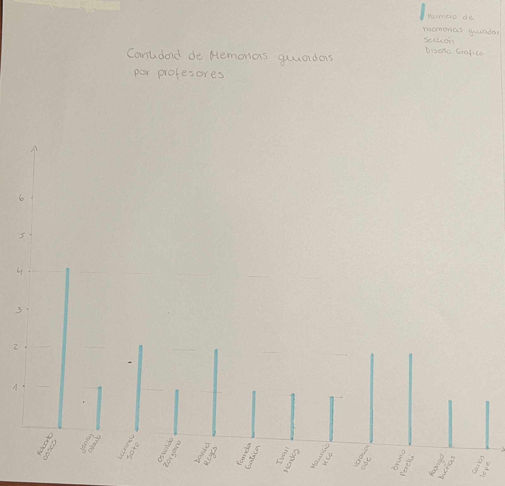
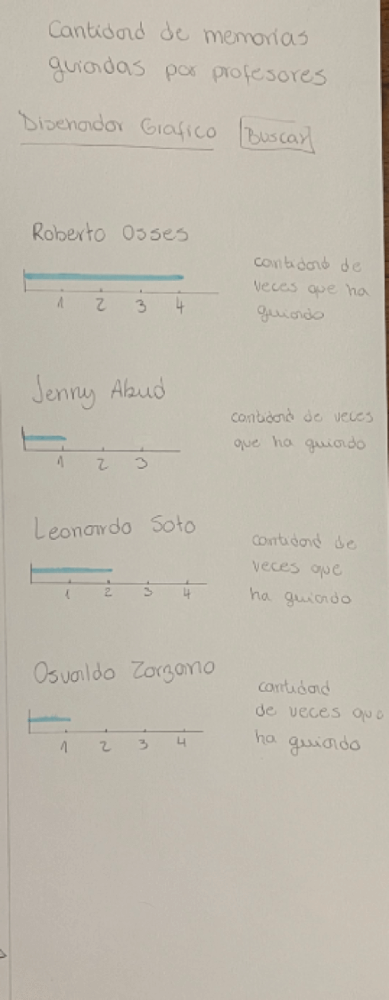